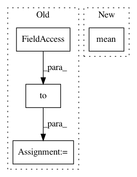

17aafdea24122bbb777f71a8ea7c2505e3fee84c,torch_geometric/nn/models/autoencoder.py,GAE,reconstruction_loss,#GAE#Any#Any#Any#,71
Before Change
pred = torch.cat([adj[row, col], adj[neg_adj_mask]], dim=0)
pos_weight = torch.tensor([neg_y.size(0) / pos_y.size(0)])
pos_weight = pos_weight.to(adj.device)
self.loss_op = torch.nn.BCEWithLogitsLoss(pos_weight=pos_weight)
return self.loss_op(pred, y)
def eval(self, adj, edge_index, neg_edge_index):
After Change
def reconstruction_loss(self, adj, edge_index, neg_adj_mask):
row, col = edge_index
loss = -torch.log(torch.sigmoid(adj[row, col])).mean()
loss = loss - torch.log(1 - torch.sigmoid(adj[neg_adj_mask])).mean()
return loss
def eval(self, adj, edge_index, neg_edge_index):
In pattern: SUPERPATTERN
Frequency: 3
Non-data size: 4
Instances
Project Name: rusty1s/pytorch_geometric
Commit Name: 17aafdea24122bbb777f71a8ea7c2505e3fee84c
Time: 2019-03-15
Author: matthias.fey@tu-dortmund.de
File Name: torch_geometric/nn/models/autoencoder.py
Class Name: GAE
Method Name: reconstruction_loss
Project Name: rusty1s/pytorch_geometric
Commit Name: 2b968e05a99392d1010cec3fb40c97c592f15065
Time: 2020-06-30
Author: luca.cavallery@gmail.com
File Name: examples/pna.py
Class Name:
Method Name:
Project Name: mapbox/robosat
Commit Name: 334952fad000988aa2a291f016127e3a68a7dee3
Time: 2018-10-02
Author: o@courtin.co
File Name: robosat/losses.py
Class Name: mIoULoss2d
Method Name: forward